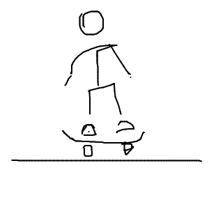
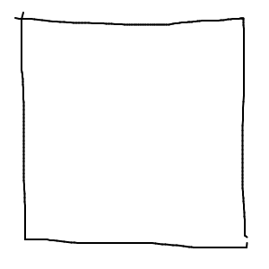

MovePix
 
Easily create
flipbook-style animations
.
Quickly export as
animated GIF
.
Share
animations in Twitter, MMS message, email, and many others.
Export as SVG
frames that you can open in vector editing software such as Adobe Illustrator or Sketch.
Backup and restore
functionality so your creations are always under your control.
Buy now in the App Store!
© 2015 ping pong estudio / mauricio giraldo arteaga
@movepixapp